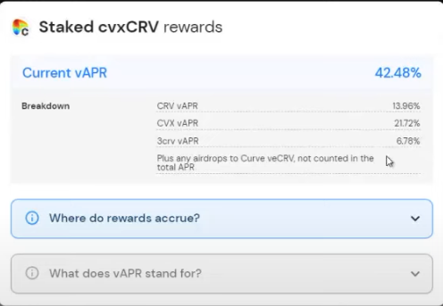
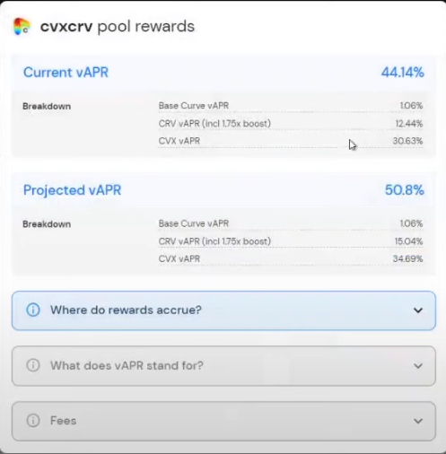

Convex Finance 深度解析
Convex Finance 深度解析
引言
Convex Finance 是一个建立在 Curve 之上的收益聚合器，旨在为 Curve 的流动性提供者（LP）和持有 CRV 代币的用户提供更高的收益。通过聚合用户的资金，Convex 为双方都带来了额外的收益机会。本文将深入探讨 Convex 的产品机制、代币模型，以及其在 DeFi 生态系统中的重要作用。
产品机制
1. CRV 质押用户
1）质押 CRV，获得 cvxCRV
- 操作：用户将 CRV 代币质押到 Convex 协议中，CRV 将被永久锁定为 veCRV（vote-escrowed CRV）。
- 获得：用户将获得 cvxCRV，这是一种可交易的代币，代表 veCRV 的收益权。
- 特点：cvxCRV 不可直接赎回为 CRV，但可以通过 Curve 上的 cvxCRV/CRV 池，将 cvxCRV 兑换回 CRV，实现流动性。
2）质押 cvxCRV，获得收益
- 操作：用户可以将 cvxCRV 质押回 Convex 协议，以获得更多的收益。
- 特点：cvxCRV 的质押是灵活的，用户可以随时存入或取回。
3）用户收益
质押 cvxCRV 的用户可以获得以下收益：
- 50% 的 Curve 交易手续费：以 3CRV（Curve 三池 LP 代币）的形式发放。
- Convex 原生代币 CVX 奖励：参与 Convex 协议的治理和收益分配。
- CRV LP 挖矿奖励的 10%：来自 Convex 对 LP 挖矿奖励的分成。
- Curve 提供的空投奖励：参与 Curve 协议的空投活动。

2. 提供 LP 的用户
1）存入 LP 代币
- 操作：用户可以将 Curve 的 LP 代币（如 3CRV、steCRV 等）存入 Convex 协议。
- 特点：LP 代币的存入和赎回是灵活的，用户可以随时操作。
2）用户收益
提供 LP 的用户可以获得以下收益：
- 50% 的 Curve 交易手续费：以 3CRV 的形式发放。
- Convex 原生代币 CVX 奖励：参与 Convex 协议的治理和收益分配。
- CRV LP 挖矿奖励的 90%：包括 veCRV 用户才能获得的挖矿加速奖励。
- 其他项目的代币奖励：如 SNX、PNT、BOR、LDO 等。
3. CVX 质押用户
1）质押 CVX，获得更多收益
- 操作：用户可以将 CVX 代币质押到 Convex 协议中。
- 特点：质押的 CVX 将被锁定一段时间，用户可以获得额外的收益。
2）用户收益
CVX 质押者可以获得：
- 部分交易手续费：以 cvxCRV 的形式发放，来自于 Convex 对 LP 挖矿奖励的 17% 收益中的 5%。
- CVX 奖励：通过参与 Curve 的 cvxCRV 池提供流动性，质押 cvxCRV LP 代币来赚取更多的 CVX。
收益分配机制
Convex 对 LP 挖矿奖励的 17% 收取费用，分配如下：
- 10%：以 CRV 的形式分配给 cvxCRV 质押者。
- 5%：以 cvxCRV 的形式分配给 CVX 质押者。
- 1%：以 CRV 的形式奖励给 调用
harvest函数的用户，用于补偿 Gas 费用。 - 1%：保留给 Convex 协议，用于持续发展。 
Convex 与 Curve 的关系
流动性挖矿的加速器
Convex Finance 作为一个收益聚合器，通过汇集大量的 CRV 代币，将其永久锁定为 veCRV，从而在 Curve 协议中获得更高的投票权和挖矿加速奖励。这使得 Convex 可以为其用户提供比单独参与 Curve 更高的收益。
分离投票权与收益权
- veCRV 的投票权：通过将 CRV 转换为 veCRV，Convex 获得了巨大的投票权，可以影响 Curve 的治理和奖励分配。
- cvxCRV 的收益权：用户持有 cvxCRV，可以享受 veCRV 的收益，而无需长时间锁定 CRV。
CVX 的作用
- 治理代币：CVX 持有者可以参与 Convex 协议的治理，包括对 Curve 池的投票。
- 投票代理：CVX 持有者可以将投票权委托给特定的地址，使得贿赂投票机制更加容易执行。
- 价值捕获：随着 Convex 锁定的 CRV 增加，CVX 的价值也会相应提升。
Convex 的代币模型
CVX 代币
- 代币名称：Convex Finance Token
- 代币符号：CVX
- 总供应量：100,000,000 枚
分配情况
- 流动性挖矿奖励：50%
- Treasury（国库）：9.7%
- 团队和顾问：9.7%
- 投资者：1%
- Curve LP 奖励：13.1%
- CVX 持有者奖励：16.5%
CVX 的铸造曲线
- 铸造机制：每当用户在 Convex 上领取 CRV 奖励时，系统会按照一定比例铸造新的 CVX。
- 曲线特点：随着总铸造的 CVX 数量增加，新的 CVX 铸造速度会逐步减缓，呈现出通缩的趋势。
数学公式
假设：
- 已铸造的 CVX 总量：( M )
- 最大供应量：( M_{} = 100,000,000 )
- 每领取 1 CRV，铸造的 CVX 数量：( CVX = (M_{} - M) r )
其中，( r ) 是一个随 ( M ) 增加而递减的比率。
CVX 的价值增长
- 控制 veCRV 投票权：随着 Convex 锁定的 CRV 增加，每个 CVX 代表的 veCRV 投票权也会增加。
- 收益分享：CVX 持有者可以通过质押获得 cvxCRV 的收益分享。
- 供需关系：由于 CVX 的铸造速度减缓，供应量增长放缓，可能导致市场上 CVX 的需求增加。
Convex 在流动性战争中的作用
流动性租赁战争
- 背景：各稳定币项目为了争夺 Curve 上的流动性，提供高额的奖励，形成了所谓的 "Curve War"。
- Convex 的推动：通过聚合大量的 veCRV 投票权，Convex 成为了 Curve 上最大的投票者，可以影响奖励的分配。
影响机制
- 增强投票权：Convex 将 CRV 永久转换为 veCRV，积累了巨大的投票权。
- 简化贿赂机制：CVX 持有者可以将投票权委托或出售给其他项目，使得贿赂选票更加容易执行。
- 价值捕获：随着 CVX 的供应量增长放缓，单个 CVX 控制的 veCRV 投票权增加，提升了 CVX 的价值。
示例：稳定币项目的竞争
- 项目 A 希望在 Curve 上的池获得更多的奖励，以吸引用户提供流动性。
- 项目 A 可以向 Convex 的 CVX 持有者提供额外的奖励，获取他们的投票支持。
- Convex 作为中介，为稳定币项目和流动性提供者之间搭建了桥梁。
操作流程
1. 质押 CRV，获取 cvxCRV
- 步骤：
- 访问 Convex Finance 的官网，连接钱包。
- 在 "Stake" 页面，选择 "Deposit CRV"。
- 输入想要质押的 CRV 数量，确认交易。
- 质押成功后，获得等量的 cvxCRV。
2. 质押 cvxCRV，获取收益
- 步骤：
- 在 "Stake" 页面，选择 "Stake cvxCRV"。
- 输入想要质押的 cvxCRV 数量，确认交易。
- 开始获得收益，包括交易手续费分成、CVX 奖励等。
3. 存入 Curve LP 代币
- 步骤：
- 在 "Stake" 页面，选择对应的 Curve 池。
- 存入 LP 代币，确认交易。
- 开始获得收益，包括交易手续费分成、CRV 奖励、CVX 奖励等。
4. 质押 CVX
- 步骤：
- 在 "Lock CVX" 页面，选择锁定的 CVX 数量。
- 确认锁定期限（通常为 16 周）。
- 开始获得 cvxCRV 的收益分成。
风险与注意事项
- 智能合约风险：参与 Convex 的操作涉及智能合约，可能存在漏洞风险。
- 流动性风险：代币价格波动可能导致资产价值下降。
- 锁定风险：质押 CRV 转换为 cvxCRV 后，CRV 被永久锁定，无法取回。
- 市场风险：DeFi 市场变化迅速，策略需要及时调整。
结论
Convex Finance 通过创新的机制，为 Curve 的用户提供了更高的收益和更多的选择。它在 DeFi 生态系统中扮演了重要的角色，推动了流动性挖矿和治理机制的发展。然而，用户在参与 Convex 时，应充分了解其机制和潜在风险，谨慎决策。
参考资料
Convex Finance 深度解析
http://navafee.github.io./convex/